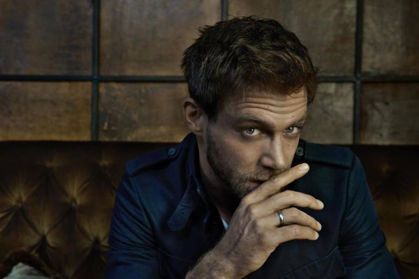
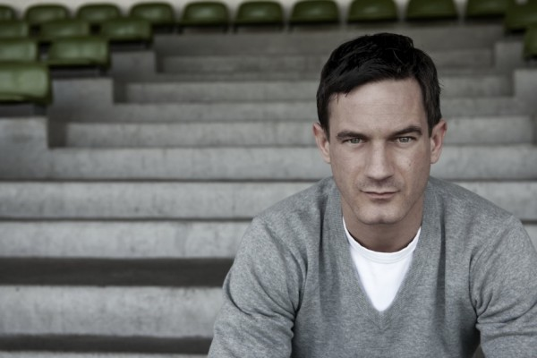
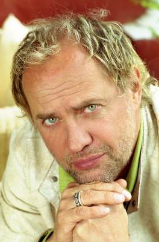
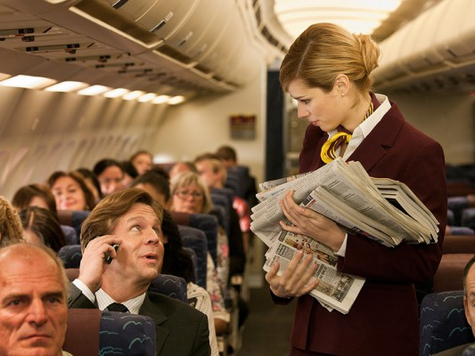
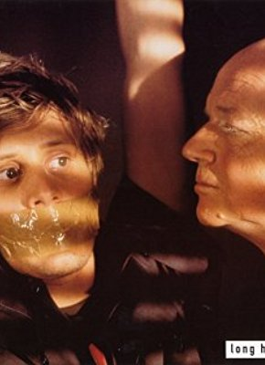
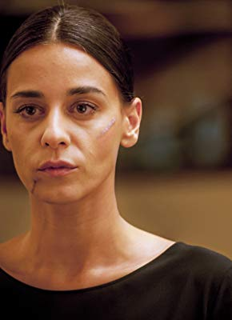

#103 Zweiohrküken
 gesehen am 11.03.2015
gesehen am 11.03.2015

 IMDB-Wertung: 5.7 / 10
IMDB-Wertung: 5.7 / 10  Metascore: 0
Metascore: 0 
Ludo und Anna hat der Alltag eingeholt. Ludo lässt seine häuslichen Pflichten schleifen, Anna ist zickig und genervt. Als auf einer Party Ludos Ex Marie auftaucht und Annas ehemaliger Freund Ralf, seines Zeichens Frauenversteher, ein paar Tage bei Anna und Ludo einzieht, geraten beide außer Kontrolle. Zweifel und Eifersüchteleien nagen an der Liebe. Anna liest Ludos SMS und als Ludo in Annas amouröser Vergangenheit stöbert, entdeckt er, dass Ralf besser weg kommt als er selbst …
Jahr: 2009
Dauer: 124 Minuten
FSK: 12
Land: Deutschland Studio: Warner Bros.Tonspuren: DD5.1 - ,
Untertitel:
Auflösung: 1080p (1920×816) Größe: 9492 MB
Genre: Komödie, Liebe
Regisseur:  Til Schweiger
Til Schweiger
Drehbuch: Anika Decker, Til Schweiger
Soundtrack: Daniel Nitt, Dirk Reichardt, Mirko Schaffer
Darsteller:
- Annika Blendl als Barmädchen
 Yvonne Catterfeld als Yvonne Catterfeld
Yvonne Catterfeld als Yvonne Catterfeld-  Ken Duken als Ralf
- Andreas Guenther als Typ - Marie
- Alwara Höfels als Miriam , archive footage
- Wladimir Klitschko als Wladimir Klitschko
- Heiner Lauterbach als Herb
 Elyas M'Barek als Bernd
Elyas M'Barek als Bernd-  Sönke Möhring als Assi 1
-  Uwe Ochsenknecht als Dr. Eisenberger
- Karoline Schuch als Lena
 Emma Schweiger als Cheyenne-Blue
Emma Schweiger als Cheyenne-Blue Til Schweiger als Ludo
Til Schweiger als Ludo Matthias Schweighöfer als Moritz
Matthias Schweighöfer als Moritz-  Nora Tschirner als Anna
- Anne Bergstedt als Elena , uncredited
 Thomas Kretschmann als Himself , uncredited
Thomas Kretschmann als Himself , uncredited- Shermine Sharivar als Shermine Sharivar , uncredited
 Tom Beck als Postbote
Tom Beck als Postbote- Annika Ernst als Judith
- Marysol Fernandez als Schöne Frau 1
- Pegah Ferydoni als Lana
- Jasmin Gerat als Caro
 Thomas Heinze als Schönheits-Chirurg
Thomas Heinze als Schönheits-Chirurg-  Marc Hosemann als Arzt
- Johannes B. Kerner als Johannes B. Kerner
- Torsten Künstler als Zottel
- Mirko Lang als Mann vom Nebentisch
- Sami Loris als Kellner Bar
-  Edita Malovcic als Marie
- Jörn Martens als JJ
- Zarah Jane McKenzie als Verkäuferin
- Faye Montana als Faye
- Denis Moschitto als Taxifahrer
- Christoph Müller-Leonhardt als Kellner Ausflugslokal
- Allegra Osmani als Allegra
- Margarita Ruhl als Schöne Frau 2
- Mars Saibert als Assi 2
- Lilli Schweiger als Sacha , archive footage
- Luna Schweiger als Junge Anna , archive footage
- Valentin Schweiger als Junger Ludo , archive footage
- Idil Üner als Orientalin
- Paul Van Dyk als DJ
- Nika von Altenstadt als Frau vom Nebentisch
- Jahmar Walker als Jahmar
- Bobby Brederlow als Zuhörer in der Flirtschule , uncredited
- Tessa Hart als Partygast , uncredited
- Ulrich Wohlleben als Bargast , uncredited
- Alexander Yassin als Telefonierender Tourist , uncredited
Datei: X:\2-Dilogie(G-M)\Keinohrhasen-Zweiohrküken\Zweiohrküken (2009, FSK12, 1920x816).mkv seit 03.02.2015
Festplatte: HD Collection-2(A-Z)-3(A-M)
 Alle Filme aus Gruppe '2-Dilogie(G-M)\Keinohrhasen-Zweiohrküken'
Alle Filme aus Gruppe '2-Dilogie(G-M)\Keinohrhasen-Zweiohrküken'